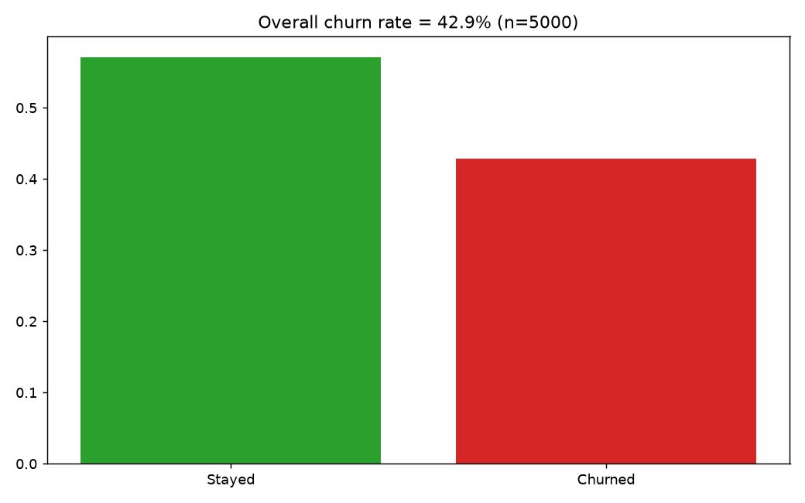
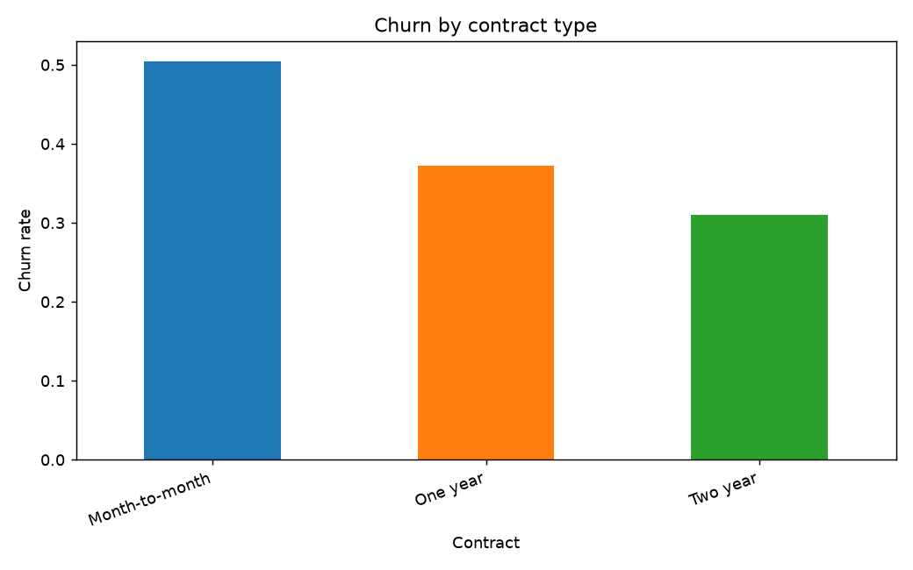
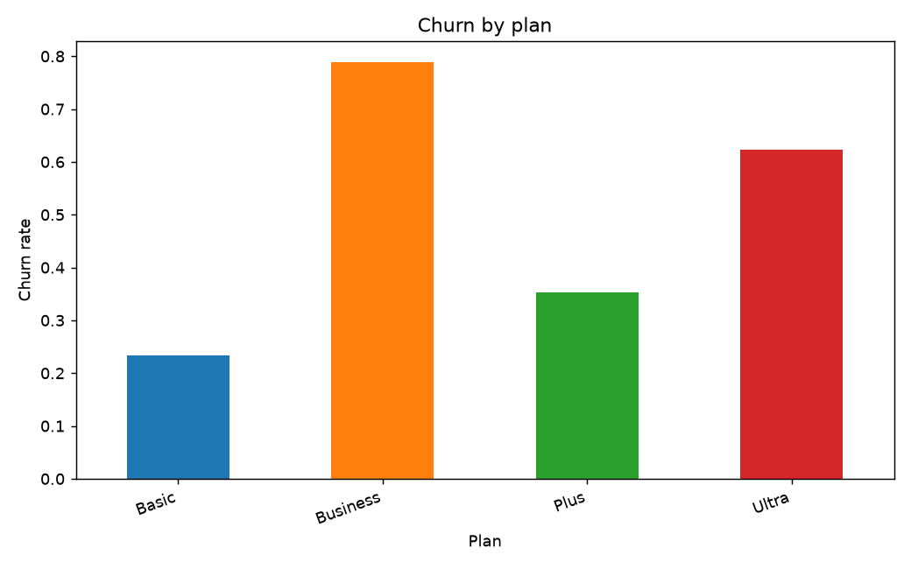
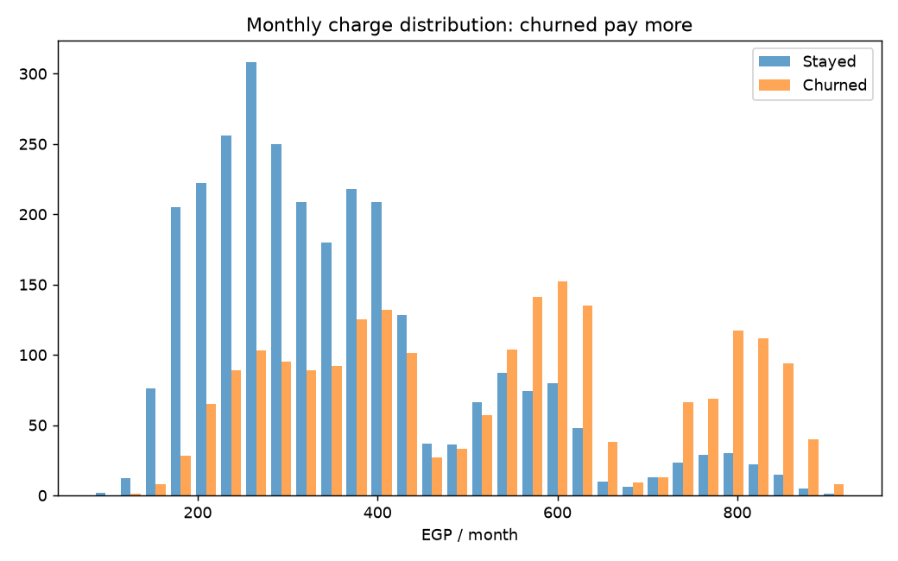
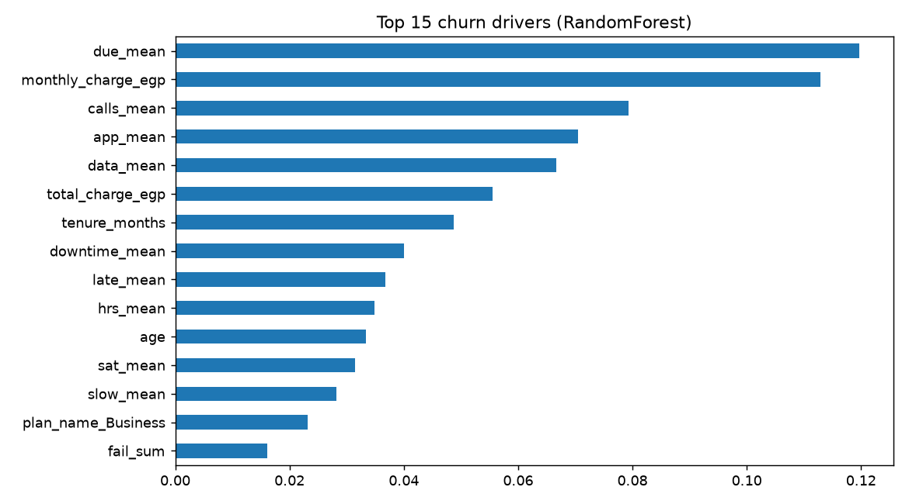
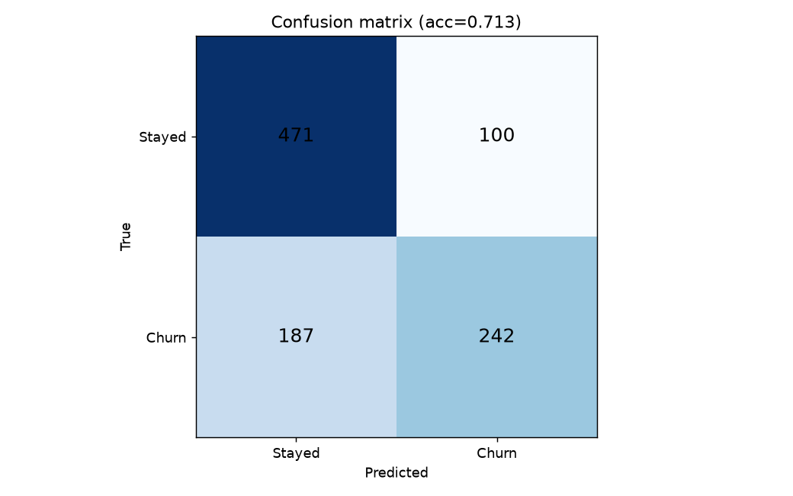
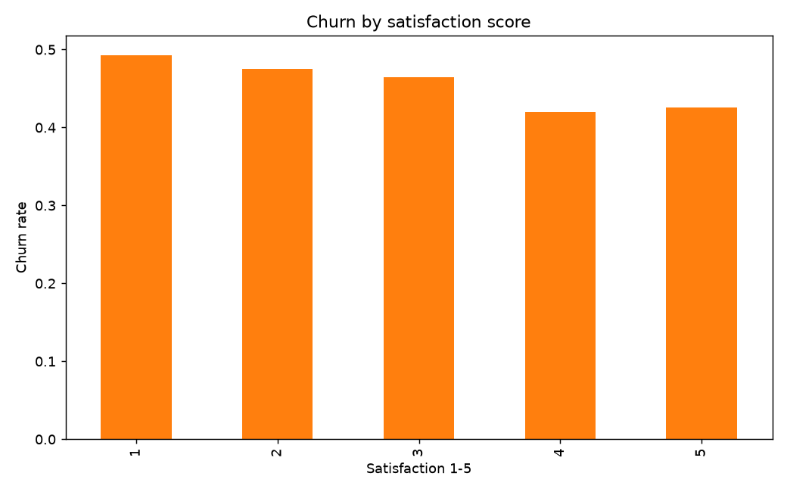

Total customers5,000
Churn rate42.86%
Model accuracy71.3%
ROC-AUC0.779
Usage rows60,000
Tickets8,500
This is a static preview. Open the same charts in Power BI using /powerbi/data_model_and_dashboard.md + DAX_measures.dax. All images below are auto-generated in /analysis/charts.
Overall churn

Churn by contract

Churn by plan

Monthly charge

Feature importance

Confusion matrix

Satisfaction vs churn

Tip: run py ml/predict.py to score new customers, then load predictions.csv into Power BI page 5.